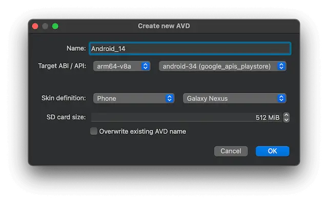

Create an Android Virtual Device (AVD)
To emulate Android devices on Linux, macOS, or Windows, use an Android Emulator. The Android Emulator runs the Android operating system in a virtual machine called an Android Virtual Device (AVD).
You can create AVDs for:
- Automotive
- Desktop
- Phone
- Tablet
- TV
- Wear
To create a new AVD:
- Go to Preferences > Devices.
- Select Add > Android Device > Start Wizard.

- In Name, give the AVD a name.
- In Target ABI / API, select an Android system image architecture (ABI) and API level that you installed on the computer.
- In Skin definition, select the AVD type, then select one of the predefined AVD skins or Custom for a custom AVD skin.
- In SD card size, set the size of the SD card for the AVD.
- Select Override existing AVD name to overwrite an existing AVD with a new AVD using the same name (
avdmanager-foption). - Select OK to create the AVD.
For more advanced options for creating a new AVD, use the command-line tool avdmanager or the Android Studio's native AVD Manager UI.
See also How To: Develop for Android, Android Deploy Configuration, and Developing for Android.